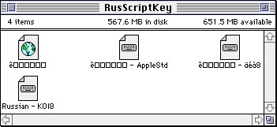
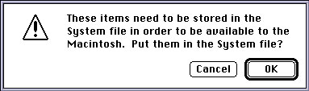

Page index / PC-MacRussian
Step Two
Step Two
Now quit all the applications running on your Macintosh by choosing 'File Menu' --> 'Quit' or by pressing Command-Q for each application. Make sure all the applications have quitted by pressing the mouse button on the upper right corner of the screen where an icon stands.Open the folder RusScriptKey by double-clicking on it. You should see four files in it, like

.Choose all the files by selecting 'Select All' from the 'Edit Menu', or by pressing Command-A. Once all the files in the folder RusScriptKey are highlighted, drag all the files onto the 'System Folder' and release the mouse button.
The computer will then prompt a window like this

, click 'OK' and restart the computer.Now go on to the next step.
Previous Step || Next Step